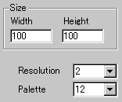
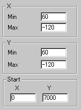

|
This applet visualises the Mandelbrot set onto a complex plane.
[Def. Mandelbrot set]
The Mandelbrot set M consists of all of those (complex)
c-values for which the corresponding orbit of 0 under
z^2 + c does not escape to infinity.
Although it is not possible to determine if certain c-values
lies in the Mandelbrot set, as the number of iteration increases
(to infinite), the closer boundary of M can be plotted.
[For more technical
information about the available parameters, click here.]
Most parameters are self-explanatory and you can
always see brief description of each parameter by moving the mouse
pointer over the wizard.
 |
First of all, define the "Width"
and "Height" of the applet area and select
a value for "Resolution." Resolution is the
magnification rate of the internal image size. |
|
For example, the value 3 gives three times
as big image size as the internal image has. So, it works
as a zooming parameter.
As for colouring of the boundary of M,
27 palettes are available. Choose a palette number and explore
the result.
|
 |
Look at the bottom of the left picture. Determine
"StartX" and "StartY" values.
These are the initial values with which recursive calculation
of z(n+1)=z(n)^2 + c (z=x+yi) begins.
Xmin and Ymax determine normal
XY complex plane scrolling values, while Xmax and Y
min give XY magnification rate.
|
Proceed to the
expert menu.
|